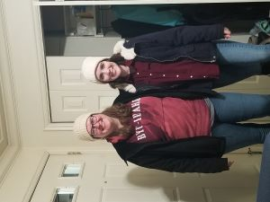
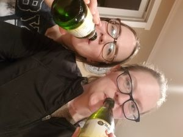
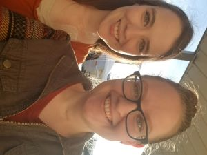
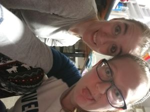

Hospital Visits
Hospitals are nothing new for my roommate and I. We keep a count of how many months we can go before having a trip to the ER or having surgery. Mostly it is Cait who has all of the hospital visits, but I'm there as well. Sometimes, I don't know who is more scared. I have had to sit in the waiting room for two hours when the procedure should only take 15 minutes. I have watched the surgeon cut her open in the ER room and perform emergency surgery. I have had to catch her when she faints.
The thing is though, I wouldn't want it any other way. She is there for me in ways that are not so obvious, but just as impactful. So yes, hospital visits happen every 2-6 months. Sometimes they are planned, sometimes they are not. But when you live a life with chronic illness, and with rare diseases as well, that seems to be one of the constants of life.
The Unlikely Situation of Friendship
Cait grew up in California (not going any more specific because #internetsafety) and I grew up in Arizona. I started college around the time that she started high school, and then she went to a college in CA for a few semesters before deciding to come up to Idaho for school. The first night I met her, she was in the front room of our apartment, with her IV pole hooked into her feeds, and reading a book like it was the most normal thing in the world. For her world, it was. For my world, that was going to become the norm (seeing it at least)
The amount of things that had to line up for us to be roommates when we were both at a place where we needed new friends is a list that can go on forever and ever. The experiences that we had bonded us and while we did not hit a twelve foot mountain troll over the head, J.K. Rowling put it perfectly in Harry Potter and the Sorcerer's Stone. “There are some things you can't share without ending up liking each other, and knocking out a twelve-foot mountain troll is one of them.” Our twelve-foot mountain troll just happened to be panic attacks, anxiety, depression, PTSD, medical emergencies, hospital visits, near death experiences, and a 7:45 class that we took together. But also the fun stuff, like celebrating holidays away from family, singing in the freezing cold under some bleachers, and just goofing off.
   Let's Spread Awareness!
Something we knew we wanted to do when we first envisioned Ely and Cait Create was use the business to spread awareness for physical and mental illnesses. We have both struggled for several years with different illnesses and are passionate about spreading awareness.
We have decided on four causes to specifically help support and bring awareness to, although we could have a list much longer than that. Besides just sharing our stories and information we also wanted to help give back. Each quarter we will have an organization that we will donate 10% of our proceeds to.
The first organization will be the Ehlers-Danlos Society. Ehlers-Danlos Syndrome is one of Cait’s main illnesses. It is a rare, genetic connective tissue disorder that affects a person’s collagen.
The second organization we will be donating to is the Hormone Health Network which is a part of the Endocrine Society that focuses on patient education. This was one of Ely’s choices. Due to Graves’ Disease she had her thyroid and one parathyroid removed in 2018. Because of how bad Graves’ Disease had affected her, her specialists decided on removing the thyroid, which isn’t usually the go-to option.
Our third organization is the National Eating Disorder Association (NEDA). This organization is close to Ely’s heart for their work in supporting individuals who struggle with eating disorders and their loved ones. Due to her struggles with an eating disorder Ely is passionate about creating awareness for all eating disorders and the people who live with them.
The last organization was chosen by Cait and is the Rape, Abuse and Incest National Network (RAINN). As a teenager Cait was the victim of rape which resulted in PTSD. RAINN is the largest organization fighting sexual violence in the United States.
These organizations are important to us because our lives have been impacted by these illnesses and events. We are glad we’re going to have this opportunity to help others who have also been impacted by way of donating to these organizations who do so much good.